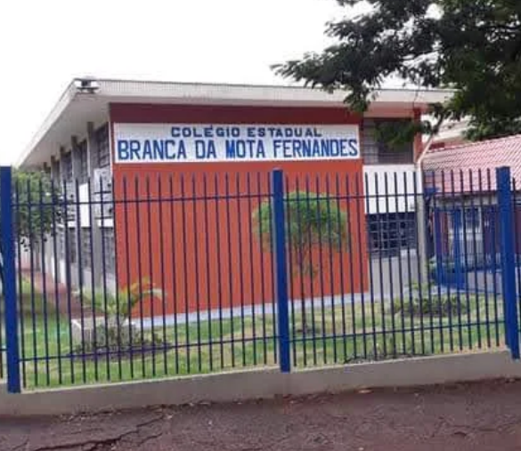
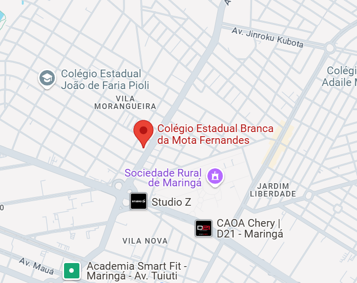

Colégio Estadual Branca da Mota Fernandes
Educando para o futuro, inspirando gerações!
Educando para o futuro, inspirando gerações!
É com grande alegria que recebemos você em nosso espaço virtual. O Colégio Branca da Mota é um lugar onde o aprendizado floresce, a criatividade é incentivada e cada aluno é valorizado.
Navegue pelo nosso site para conhecer mais sobre nossa proposta pedagógica, infraestrutura, eventos e tudo o que faz do Branca uma referência em educação de qualidade.
Figura 1: Entrada principal da nossa escola.
Oferecer uma educação integral e de excelência, formando cidadãos críticos, éticos, conscientes e preparados para os desafios do século XXI, em um ambiente acolhedor e estimulante.
Ser reconhecida como uma instituição de ensino inovadora, inclusiva e de referência na promoção do desenvolvimento pleno de seus alunos.
Contamos com salas de aula amplas e climatizadas, laboratórios de ciências e informática modernos, biblioteca com vasto acervo, quadra poliesportiva coberta, pátio arborizado, cantina e espaços de convivência pensados para o bem-estar dos nossos alunos.
O Colégio Branca da Mota oferece uma grade curricular completa e diversificada, atendendo aos seguintes níveis de ensino:
Figura 2: Ambiente de uma de nossas salas de aula.
No Colégio Branca da Mota, a vida estudantil vai além da sala de aula. Incentivamos a participação em projetos, feiras de ciências, olimpíadas de conhecimento, atividades culturais e esportivas.
Nosso grêmio estudantil é atuante e promove a integração entre os alunos, além de representar seus interesses junto à direção da escola.
Nossos alunos frequentemente se destacam em competições regionais e nacionais. Divulgamos aqui suas principais conquistas e os projetos inovadores desenvolvidos.
(Espaço para listar algumas conquistas ou projetos)
Acompanhe nosso calendário de eventos e as comemorações que marcam o ano letivo no Branca da Mota.
Celebramos com sucesso o Dia das Mães com apresentações emocionantes de nossos alunos. Veja as fotos na galeria!
Confira alguns momentos especiais registrados em nossa escola.

Festa da Primavera

Intervalo divertido

Aula de Ciências

Cerimônia de Formatura
Entre em contato conosco! Estamos à disposição para atendê-lo.
Localização:
Figura 3: Mapa para chegar ao Colégio Branca da Mota.